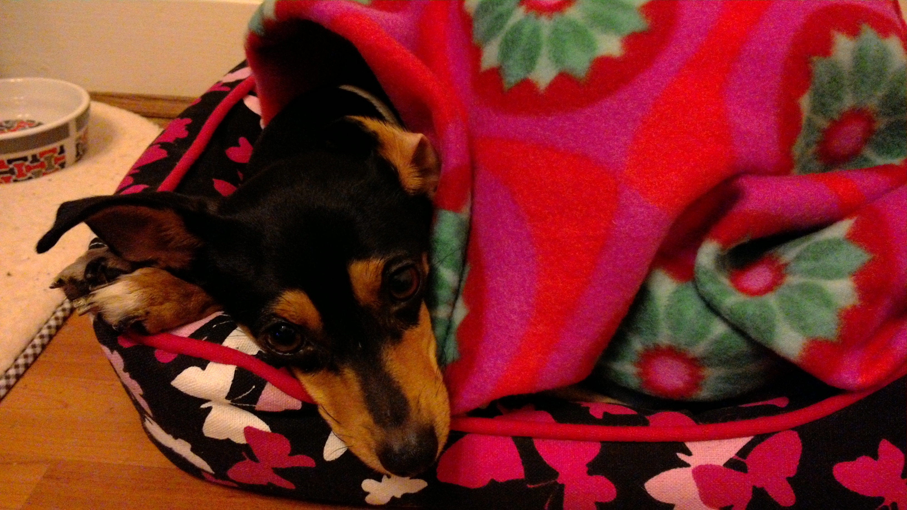
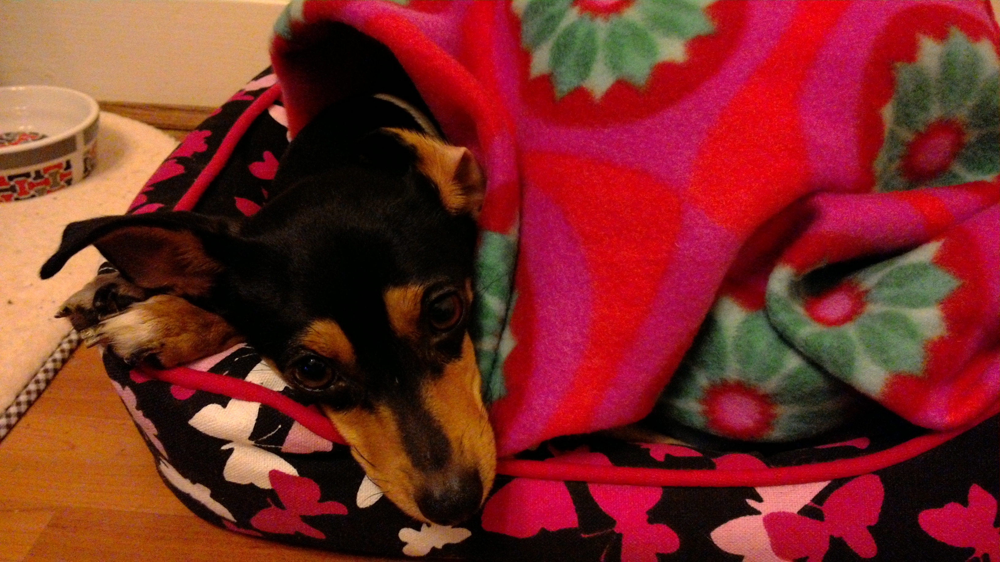

The Miniature Pinscher (Zwergpinscher or Min Pin) is a small breed of dog originating from Germany. The breed's earliest ancestors may have included the German Pinscher mixed with Italian greyhounds and Dachshunds.
Historical artifacts and paintings place the Min Pin as a very old breed, but factual documentation began less than 200 years ago, leaving their actual origins to debate. The Miniature Pinscher is reported to include the Dachshund and Italian Greyhound among its ancestors. Many historians and those who have researched the background of the breed agree that this heritage is most likely correct, adding the shorthaired German Pinscher to the family tree. The international kennel club, the Fédération Cynologique Internationale, lists the Miniature Pinscher in Group 2, Section 1.1 Pinscher, along with the Dobermann, the German Pinscher, the Austrian Pinscher, and the other Toy Pinscher, the Affenpinscher. Other kennel clubs list the Miniature Pinscher in the Toy Group or Companion Group.
The misconception that the Miniature Pinscher is a "miniature Doberman" occurred because the Doberman Pinscher (a breed developed by Karl Friedrich Louis Dobermann around ) was introduced to the U.S. before the Miniature Pinscher. In , the Miniature Pinscher was introduced to the AKC show ring. At the time, not knowing that it was referred to officially in Germany as the Zwergpinscher (little biter), the AKC referred to the breed as simply "Pinscher" and listed it in the miscellaneous category. When the Miniature Pinscher Club of America (MPCA) was created in (the year of the breed's official introduction into the AKC), they petitioned for Miniature Pinschers to be placed in the Toy group. The AKC's description, that the dog "must appear as a Doberman in miniature," led to the misconception common today that this breed is a "Miniature Doberman Pinscher." The original name for this breed in the U.S. was "Pinscher (Toy)" until when the name was officially changed to Miniature Pinscher.
Historical artifacts and paintings indicate that the "Min Pin" is a very old breed, but factual documentation begins less than 200 years ago, which leaves the breed's actual origins open to debate. There is a drawing by Jean Bungartz, published in comparing the Miniature Pinscher to the German Pinscher.
The Miniature Pinscher is structurally a well balanced, sturdy, compact, short-coupled, smooth-coated dog. They are naturally well groomed, vigorous and alert. Characteristic traits are their hackney-like action, fearless animation, complete self-possession, and spirited presence. Legs should be straight with no bending in or out. The Miniature Pinscher frequently has a docked tail and cropped ears, though the AKC no longer requires ear cropping for shows.
According to the American Kennel Club, the Miniature Pinscher should be 10–12 1⁄2 inches (25–32 cm) high with most desirable height 11–11 1⁄2 inches (28–29 cm) at the highest point of the shoulder blades. Length is equal to height, though females may be slightly longer. The ideal weight is 8–10 pounds (3.6–4.5 kg).
The coat is short and smooth, with no undercoat. Available colors include solid red, stag red, blue stag red, chocolate stag red, fawn stag red, as well as black, chocolate, blue, and fawn with tan points or rust points. For showing in the United States, AKC disqualifies all colors but the solid or stag red and the black or chocolate with rust points. The Pinscher-Schnauzer Club, which maintains the standard for showing in Germany, has the same restrictions. In the UK, blue with rust points is allowed in the show ring. White spots larger than half an inch or black spots on the points are disqualifications for showing in most countries. Merle is not an accepted coloring of the breed.
Grooming is easy, as the smooth, short-haired coat requires little attention, needing only occasional brushing and shampooing. Care must be taken in cold weather. Sweaters or baby blankets for a Miniature Pinscher keep it from getting too cold. Miniature Pinschers are an active breed and need access to a fenced yard, or be given a daily walk.
Miniature Pinschers are for experienced dog owners. The Miniature Pinscher is an assertive, outgoing, active, and independent breed. Miniature pinschers are energetic and need a fenced in yard to run in; they make great agility dogs. They are great escape artists and some recommend having a kennel with a lid on it for them to run around in. They are good watchdogs, as they are alert and wary of strangers. It is recommended that adults and teenagers, rather than young children, play with a Miniature Pinscher as younger children play rough.

 
